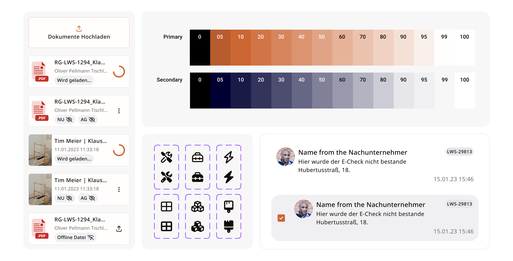
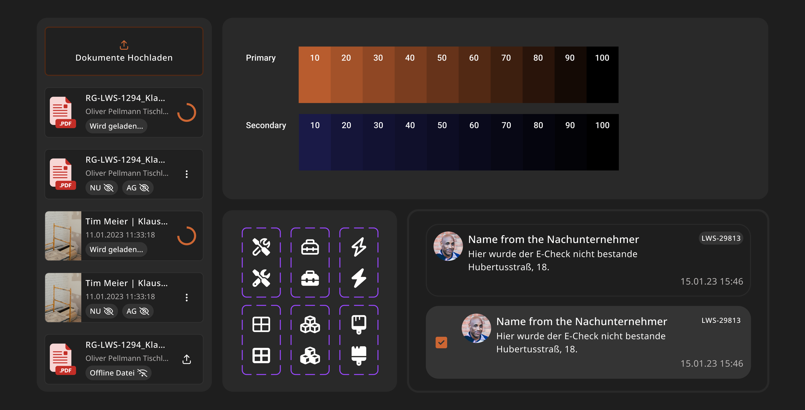
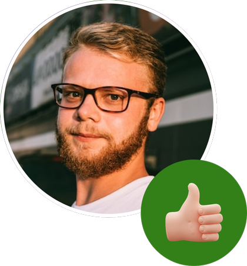
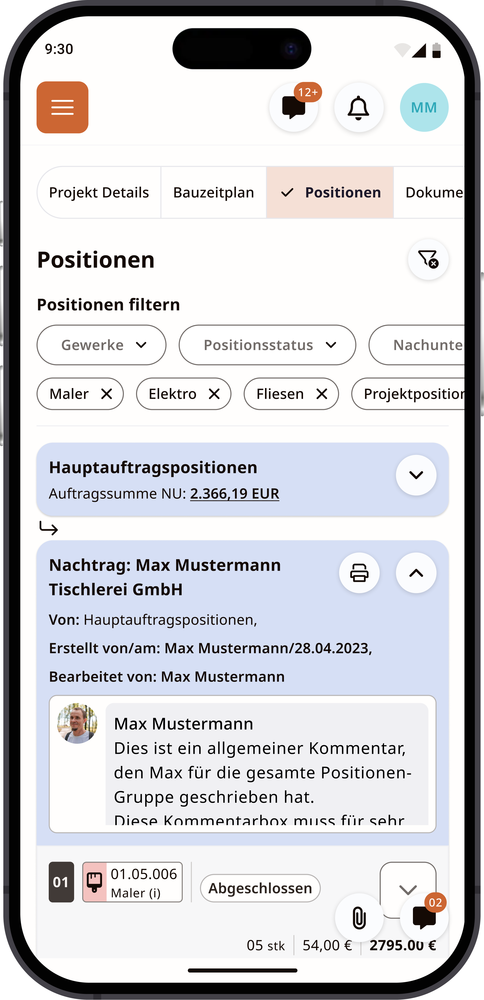
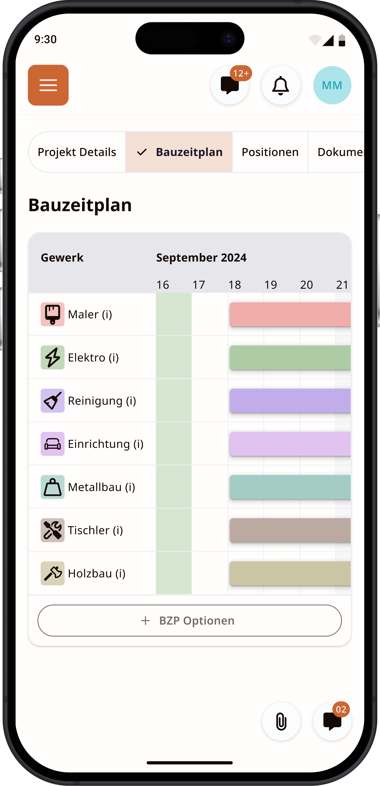
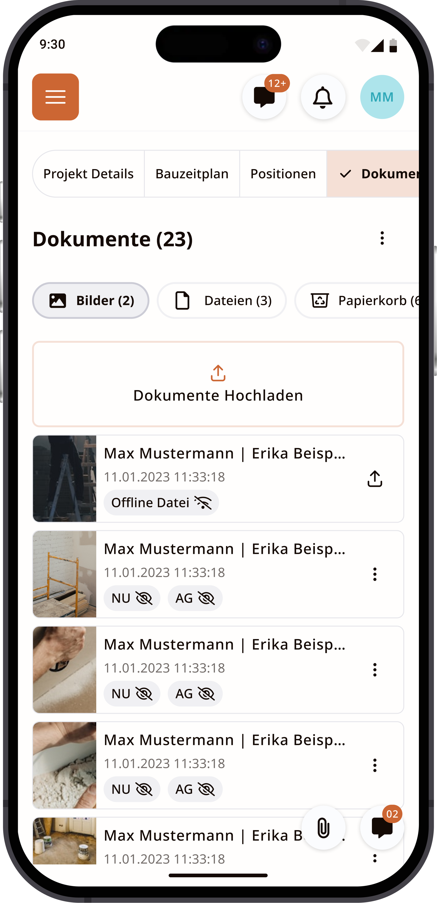
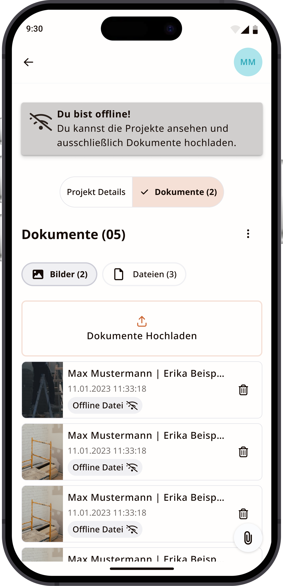

From the ground up
About Leo
Leo is a web app for managing construction and housing renovation projects that digitizes the entire project lifecycle — preparation, planning, execution, and closeout — connecting clients, contractors, and subcontractors in real time, from team management to invoicing.
My role
- Redesigned the user interface for the existing web app
- Designed Leo's native app from scratch
- Developed Leo's design system and brand language
- Interviewed users across different roles to identify pain points and translate them into interface solutions
Alexander Rüsseler, GWG Wuppertal
All communication, centralized in one view — nothing lost between clients, contractors, and subcontractors.



“Awesome! The new interface is consistent, clear, and easy to use.”
Khalid Aouraghe
Design system:
This is part of the design system, built to create harmony across the app every time new user flows are created.
Native Leo app




Jaqueline Krott, Strack GmbH
Cleaner forms with structured steps, making it effortless to create a quote or a new project.
Chat Interaction
Chat, redesigned to flow seamlessly across every platform.